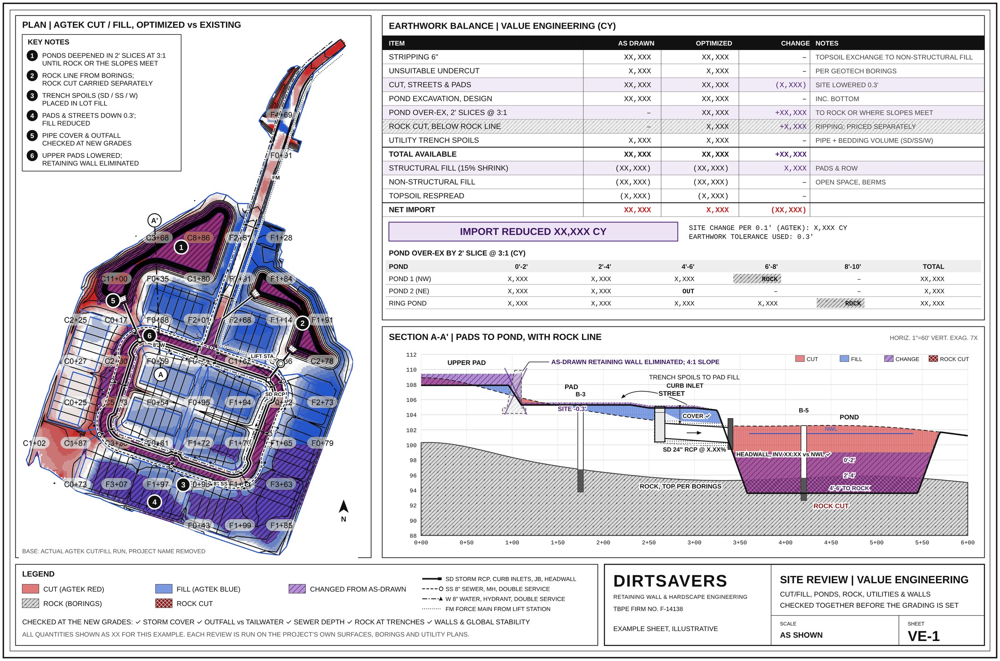
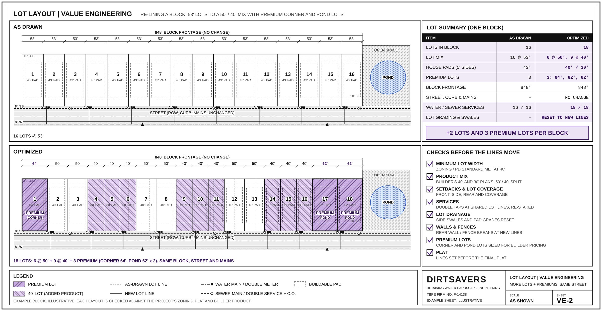

Land development value engineering
Balance the dirt. Reduce the walls.
We value engineer residential land developments before the grading is set. We review your civil plans early, find the grading changes that balance cut and fill on site and take out or shorten retaining walls, then design and seal the walls that remain, global stability analysis included.
Why builders bring us in early
Import, export and retaining walls are among the biggest swings in what a finished lot costs. The time to control them is before the grading is set.
Send it at 30%, not 90%
A 30% design is easy to change. A 90% design is not. Bring us in early and we help steer the grading so the site balances and the walls are reduced before the final civil set is drawn.
Land under contract? A concept plan and topo are enough for an earthwork and wall check during due diligence, so the dirt and wall cost is known before closing.
What we look at
Grading sets both the dirt balance and the wall heights, and the storm and sewer set how far the grades can move. We look at all three together.
Balancing the site
Pad, street and pond grades checked against the dirt balance, phase by phase.
- Import and export reduced by adjusting pad and street grades
- Site raised or lowered a few tenths where it pays
- Ponds deepened or reshaped to supply fill
- Dirt balanced by phase instead of hauled off and back
Reducing retaining walls
Every wall on the grading plan is questioned first: can grading take it out or make it shorter?
- Walls removed or shortened by adjusting grades and slopes
- Wall type by height and lot condition
- Global stability from the geotech, including tiered and pond walls
- Conflicts with lots, easements and utilities flagged early
Utility checks for grading
Outfall elevations, pipe cover and sewer depths set how far a site can be raised or lowered.
- Outfall and tailwater elevations checked against a lowered site
- Storm inverts raised where they run deep
- Minimum cover and sewer depth limits on street and pad grades
- Lift station and force main phasing checked against grading
What you receive
A clear review your civil can act on
The review opens with the site as drawn against the site optimized: cut and fill from the surfaces, the earthwork balance line by line, the ponds, rock and utility trenches, and a section through the pads and pond. It then lists the plan changes that get you there, written for your civil engineer to adopt.
Once the grading is settled, we design the walls that remain and deliver sealed plans for permit and construction. Tall and tiered walls get a global stability analysis before they are priced.


How it works
Preliminary layouts and 30% sets are the best place to start.
Send the early civil
Concept or 30% grading plans, plus the geotech report if there is one.
Site review
Dirt balance, walls and utilities checked against each other, with global stability run where walls are tall or tiered.
Recommendations
Plan changes for your civil engineer, bottom line first.
Wall design
The walls that remain, designed to the final grading with sealed plans for permit and construction.
Sam Bellock · Director of Land Development, PulteGroup Coastal CarolinasDirtsavers has been an invaluable partner to our land development team, consistently delivering accurate and timely take-offs that have helped improve both the quality and efficiency of our design process. His practical insight, attention to detail, and collaborative approach have been instrumental in identifying value engineering opportunities, helping us make smarter decisions and optimize projects while maintaining our commitment to quality and performance.
Questions developers ask
Do you replace our civil engineer?
No. Your civil engineer designs the site and stays the engineer of record for it. We review the plans, recommend grading changes, and design and seal the retaining walls.
Do you design the walls too?
Yes. The review comes first, then we design and seal the retaining walls that remain to the optimized grading.
Can you handle the global stability analysis?
Yes. We run global stability from your geotech report for tall walls, tiered walls, walls on slopes and walls next to ponds, and seal the analysis with the wall design. We also check your utility and irrigation plans against each wall and give a recommended setback, so a water line can be moved on paper instead of a footing being deepened in the field. How walls fail shows what it checks.
When should we send plans?
As early as you have a concept or 30% grading plan. Changes are easy at 30% and get harder at every submittal after that.
What do you need to start?
The grading plan, the utility layout if there is one, the landscape irrigation plan, and the geotech report if it is available. CAD files help, but PDFs are fine. If something is missing, we still run the work and note what we assumed.
Our plans are already at 90%. Is it too late?
Not for the walls. We can still check wall layout, type and global stability before bid and design the walls to the plans as drawn.
How is the work priced?
We quote a fee for the review and the wall design up front from your plan set.